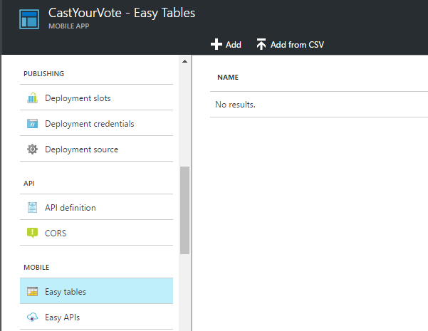
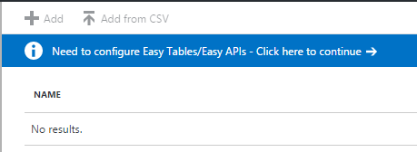
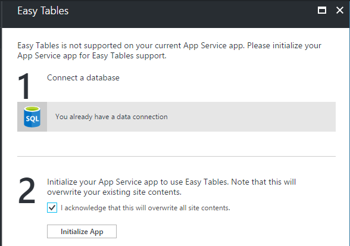
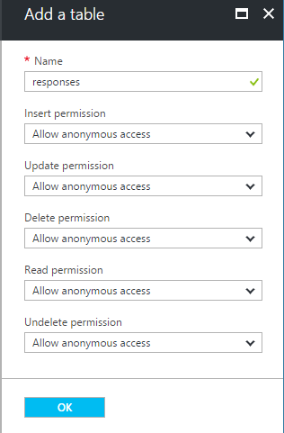
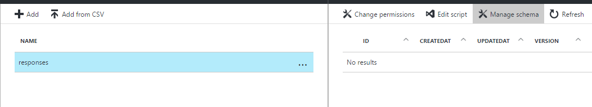
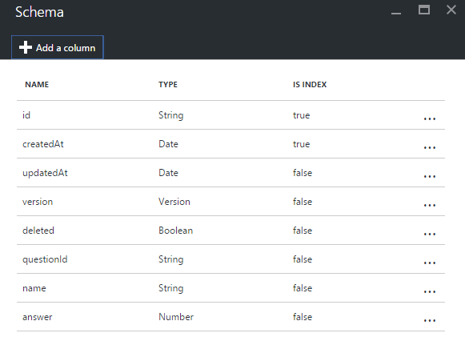

Duration
5 minutes
Goals
In this lab exercise, you will add a new Easy Table to your mobile application using the Azure portal. This exercise can only be done if you used the portal to create your service (e.g. Node.js). If you are using an ASP.NET back end, then you need to use these instructions instead.
Challenge
You will need to create a new Easy Table named responses to hold the survey response data. It has the following required shape:
| Columnn Name | Type |
|---|---|
| name | String |
| questionId | String |
| answer | Number |
If you need some guidance, you can use the step-by-step instructions below.
Steps
Add the response Easy Table
- Open a browser window and login to the Azure management portal with your account.
- Go to your mobile app dashboard.
- Scroll down through the actions blade and locate the Mobile section. Click on the "Easy tables" item. 
- If there is a notice to do so, work through the initial Easy Tables configuration. You will need to initialize the App Service, which will overwrite any existing site contents, so make sure you are working on an App Service created for these labs.  
- Click the + Add toolbar button to add a new Easy Table definition.
- Set the name of the new table to be "responses". 
- Click OK to create the table definition.
Add custom columns to the responses table
Now that we have our table, let's add a few columns to it to store our data.
- Click on the "responses" table in the Easy Table blade.
- Click the Manage Schema toolbar button. 
- Click the + Add a Column toolbar button to add a new column. We want to add three columns to this table:
- questionId (String) to hold the question the person responded to.
- name (String) to hold the person's name.
- answer (Number) to hold the answer the person selected.

Check your table endpoint (Optional)
Now that we've setup our table, let's make sure the endpoint is working. You can use any generic REST client you prefer, a nice, free one is Postman which is available as a plug-in for Chrome. You can even hit the endpoint with a regular browser, but since it will be missing the header value, you will get an error back (indicating you are missing the header value).
- Open your REST client.
- The table endpoint will be the URL for your service followed by /tables/responses. So, for example if your site name is castthevote, then the full URL for the table would be: http://castthevote.azurewebsites.net/tables/responses.
- Add a header value with the name ZUMO-API-VERSION and set it's value to "2.0.0".
- Issue a GET request.
- Since the table has no data in it, you should get back an empty JSON array:
[]. - Alternatively, if you are using a Linux/Mac system, or have access to the command-line Curl, you can use it to hit the service and see the response:
$ curl -H ZUMO-API-VERSION:2.0.0 -g http://castthevote.azurewebsites.net/tables/responses % Total % Received % Xferd Average Speed Time Time Time Current Dload Upload Total Spent Left Speed 100 2 100 2 0 0 32 0 --:--:-- --:--:-- --:--:-- 42[]
Summary
In this exercise, you added a new Easy Table to your service using the Azure portal.